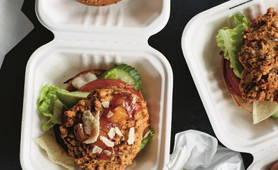

Bhaji Burger
Original Recipe by Henry Firth and Ian Theasby



Ingredients
- 2– 4 cups vegetable oil, for deep-frying
- 2 red onions
- 2 ½ -inch piece fresh ginger
- 1 fresh red chili
- generous 1 cup fresh cilantro leaves
- 1 ½ tsp coriander seeds
- 1 ½ tsp cumin seeds
- 2 ½ cups chickpea flour
- 1 ½ tsp garam masala
- generous ¾ cup water
- salt
TO SERVE (Optional)
- 6 burger buns
- Mayonnaise
- Cucumber
- Tomato
- Avocado slide
- Lettuce
- 2 tbsp mango chutney
- Pappadum,
Total time: 30 minutes || Serving: 6 || Rate: 8/10
Instructions
- Large saucepan over high heat | Cooking thermometer, optional | Pestle and mortar | Line a dinner plate with paper towels
Pour the vegetable oil into the large saucepan so that it comes no more than two-thirds up the side of the pan | Heat the oil to 350°F, or until a wooden spoon dipped into the oil sizzles around the edges
Meanwhile, peel and very finely slice the onions and put them into a big bowl | Peel the ginger by scraping off the skin with a spoon and finely chop | Rip the stem from the chili, cut it in half lengthwise, and remove the seeds if you prefer a milder flavor, then finely chop and add to the pan | Roughly chop the cilantro leaves | Add the ginger, chili, and cilantro to the bowl | Crush the coriander seeds and cumin seeds with a pestle and mortar or the end of a rolling pin and add them to the bowl | Add the chickpea flour, garam masala, water, and a generous pinch of salt and mix until everything is well combined and covered with a wet sticky batter
Divide the mixture into 6 and use your hands to mold it into patties around 3 ½ inches wide and no more than 1/3 inch thick | Use a metal spoon to carefully lower 2 of the patties into the hot oil and cook them for about 5 minutes, flipping them over halfway | Remove the patties when they are golden and crisp and transfer to the plate lined with paper towels to drain any excess oil | Repeat with the remaining patties
While the bhajis are frying, split the burger buns open and spread the bottom halves with vegan mayonnaise | Thinly slice the cucumber and tomato | Halve and carefully pit the avocado by tapping the pit firmly with the heel of a knife so that it lodges in the pit, then twist and remove the pit | Run a spoon around the inside of the avocado skin to scoop out the flesh, then slice finely
To serve the bhaji burgers, lay a few lettuce leaves on the bottom of the burger buns and place the burgers on top | Spread a little mango chutney on top of each, followed by slices of tomato, avocado, and cucumber | Break up the pappadum and sprinkle it over the top before closing the buns
Tags: gluten-free, dairy-free, vegan, 30 minutes, lunch, dinner, main